Parking in the Netherlands requires a different understanding than most other European countries. Dutch cities are designed around cycling, and on-street parking is tightly regulated through permit systems, controlled parking zones, and strict curb markings. Whether you're a visitor, expat, or new driver in the Netherlands, misunderstanding Dutch parking rules can quickly result in fines of fines.
This guide decodes every parking sign, curb marking, and regulation you'll encounter on Dutch roads. From black and white curbs to yellow prohibition zones, residential permit requirements to special parking areas, you'll learn exactly what each marking means and how to avoid costly violations across Dutch cities.
Key Takeaways
- Black and white curbs allow stopping but not parking; yellow curbs prohibit both parking and stopping
- Controlled parking zones (parkeerzone) require resident permits or visitor permits—parking without one results in fines fines
- Time-limited parking zones have specific hours displayed on signs; overstaying results in fines fines
- Special parking areas exist for permit holders, carpool users, park-and-ride facilities, and disabled drivers
- Early payment discounts (usually a discount) apply if fines are paid within 4-14 days
Understanding Curb Markings: Black & White vs. Yellow
Dutch curb colors are the foundation of parking regulations. Unlike line-based systems in other countries, the Netherlands uses curb color to indicate the most important restriction. Understanding the difference between black/white curbs and yellow curbs is critical—get it wrong and you'll receive a fine.
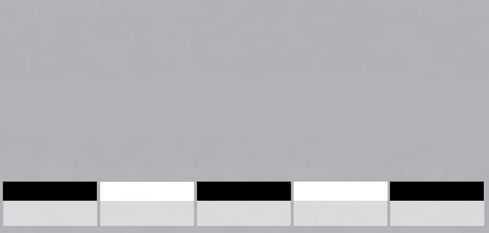
Black and White Curbs
No parking, but stopping is allowed. Black and white curbs indicate you can briefly stop for loading, unloading passengers, or brief drop-offs—but cannot leave your vehicle unattended for parking.
- Stopping for passenger drop-off/pick-up
- Loading/unloading goods (brief)
- Taxi stands
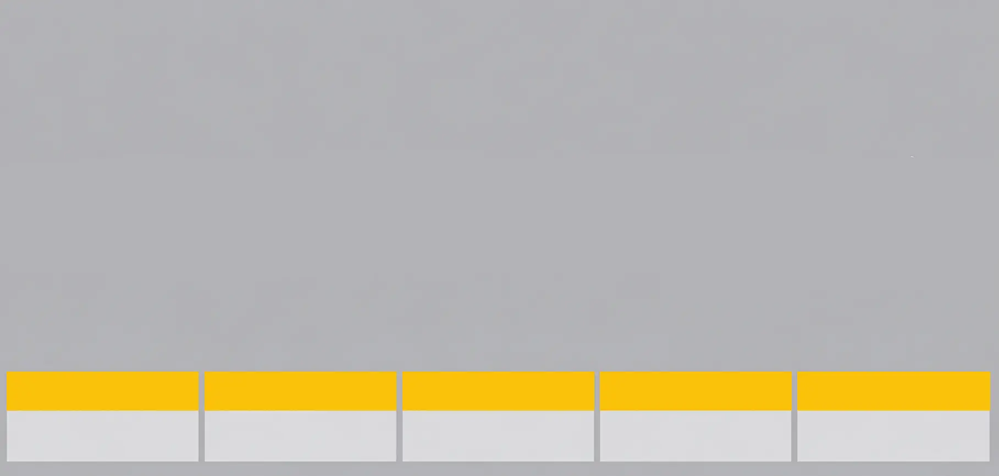
Yellow Curbs
No parking or stopping at any time. Yellow curbs are the strictest prohibition—you cannot even briefly stop. Vehicles parked on yellow curbs are subject to immediate towing and fines.
- No stopping for any reason
- No parking
- No loading/unloading
- Vehicles will be towed
Fine: fines + towing costs
Prohibition Signs: Red Circular Signs Explained
The Netherlands uses standardized red circular prohibition signs to clearly indicate where parking is absolutely forbidden. These signs take priority over any other markings and are consistent across all Dutch municipalities.
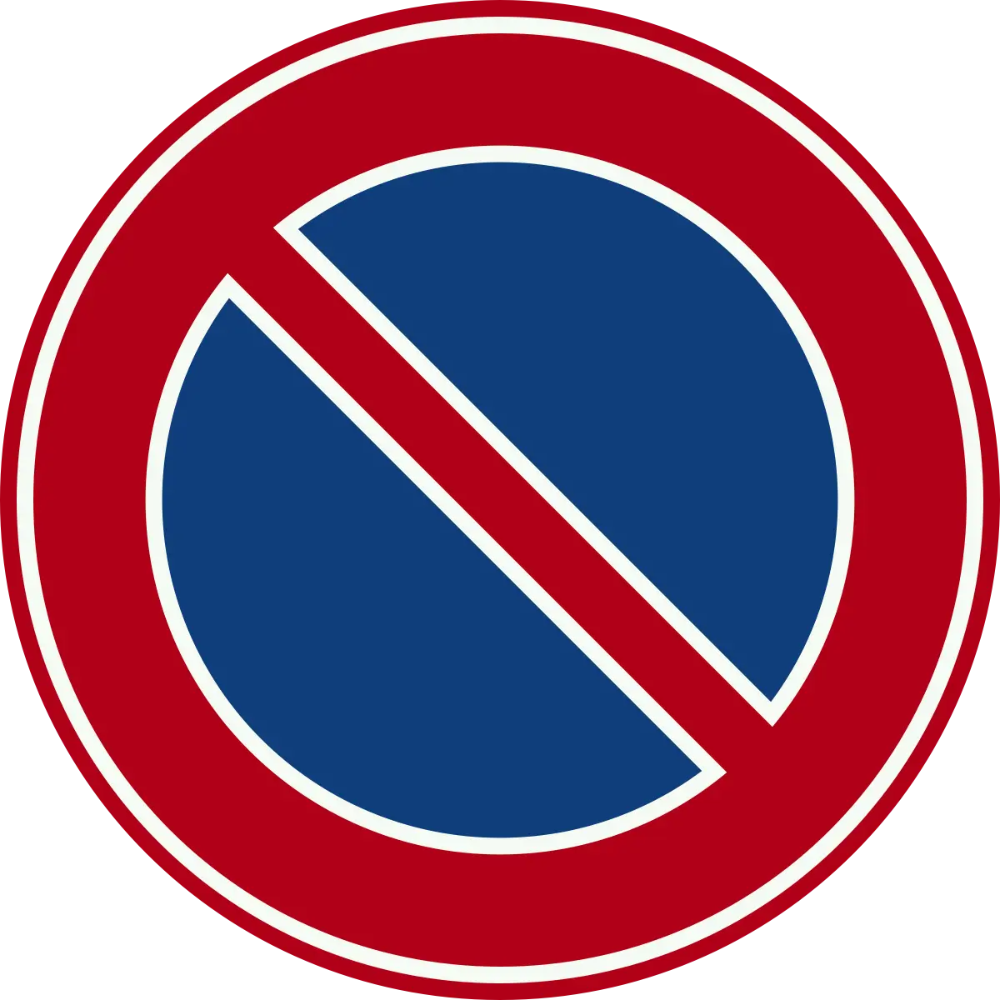
No Parking (Parkeren Verboden)
Red circle with blue X—absolute prohibition on parking. No exceptions under normal circumstances. These zones are typically fire hydrant areas, driveways, or critical access points.
- Emergency vehicles (ambulance, fire truck)
- Official vehicles on duty
- Disabled permit holders (specific zones only)
Fine: fines
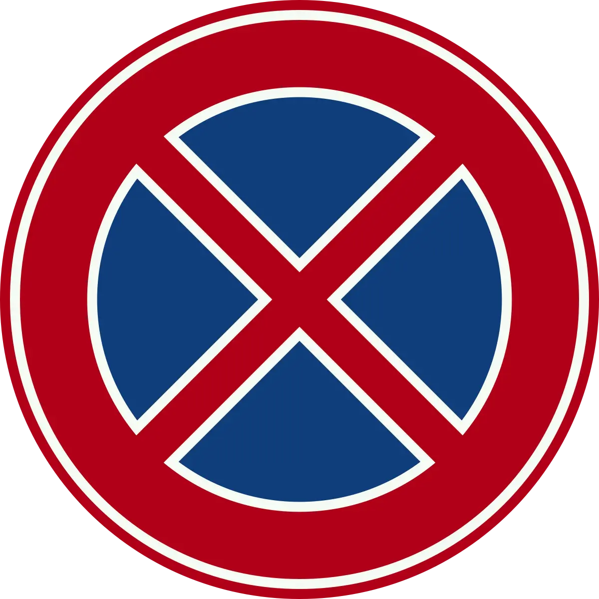
No Stopping and Parking (Parkeren en Stoppen Verboden)
Red circle with double blue X—no stopping or parking at any time for any reason. You cannot even briefly stop to drop off passengers or load goods.
Fine: fines
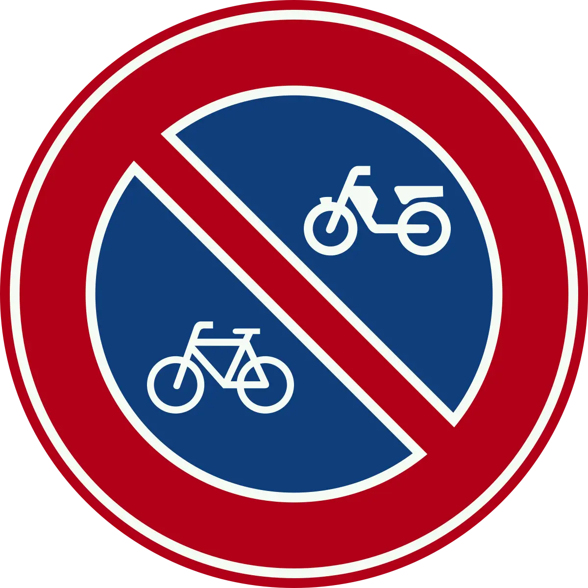
No Parking for Bicycles or Mopeds (Geen Parkeerplaats voor Fiets of Brommer)
Red circle with bike/moped symbol—prohibits only bicycles and mopeds from parking. Cars may park in these areas if no other restrictions apply.
Parking Zone Signs: Residential Permits & Visitor Parking
Dutch municipalities use a controlled parking zone system (parkeerzone) to manage on-street parking. Most residential areas require permits (vergunning) to park. Understanding permit zones is essential to avoiding fines in Dutch cities.
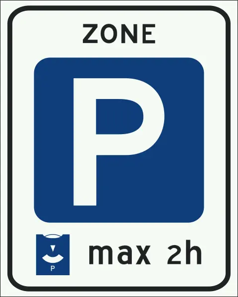
Controlled Parking Zone (Parkeerzone)
Blue square with white "P"—indicates the beginning of a controlled parking zone. Parking requires either a resident permit (vergunning) or visitor permit payment at parking meters or app.
- Must purchase annual vergunning (typically fines/year)
- Free parking with permit displayed
- Pay-and-display at meters (fines/hour)
- Online app parking available in most zones
Fine: fines without permit
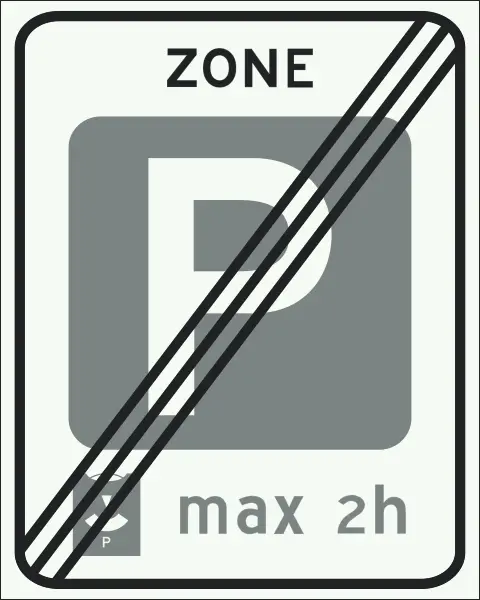
End of Controlled Parking Zone
Blue square with white "P" and diagonal line through it—marks the end of a controlled parking zone. Normal parking rules apply after this sign; you no longer need a permit.
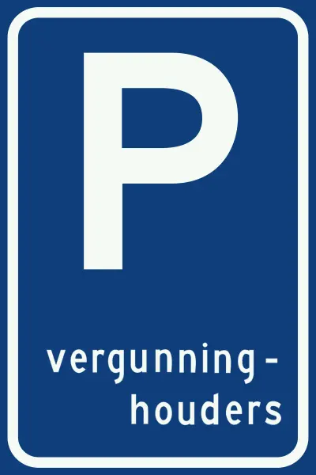
Resident Parking (Vergunning-Houders)
Blue "P" with "vergunning-houders" text—parking reserved for resident permit holders only. Non-residents cannot park here, even with payment.
- Resident vergunning holders only
- Permit must be clearly displayed
- Non-residents will be fined
Fine: fines without resident permit
Special Parking Areas & Facilities
Beyond standard parking zones, the Netherlands provides specialized parking areas for specific user groups. These designated areas have clear requirements and restrictions that vary by type.
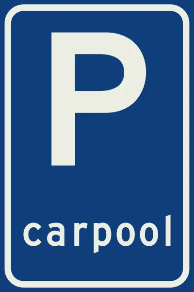
Carpool Parking (P Carpool)
Blue "P" with carpool symbol—parking reserved for carpool vehicles with multiple occupants. Single occupant vehicles are not permitted.
Fine: fines if not carpool-eligible
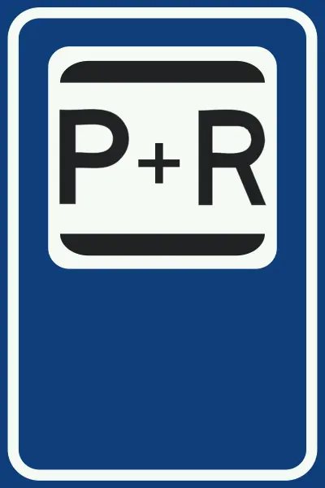
Park and Ride (P+R Facility)
Blue "P" with "P+R" text—parking facility designed for drivers to park and use public transportation. Common near train stations and major transit hubs.
- Parking usually free or fines/day
- Maximum stay: 24-72 hours (varies)
- Designed for commuters transferring to transit
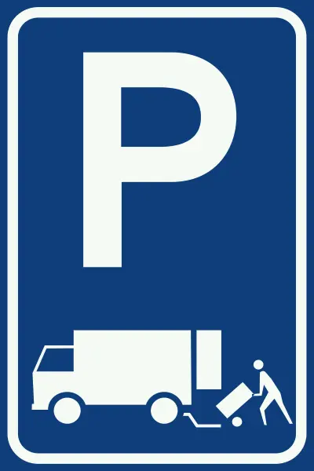
Loading and Unloading (Belasting-Losplaats)
Blue "P" with truck symbol—reserved for commercial loading and unloading only. Private vehicles cannot park here for any duration.
Fine: fines for non-commercial parking
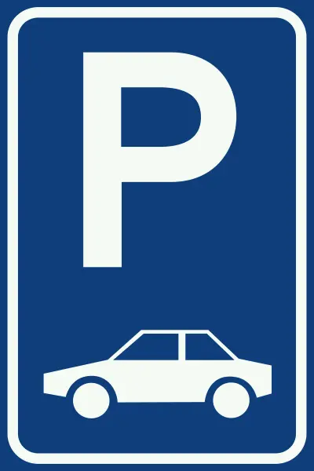
Category-Specific Parking (Alleen voor Bepaalde Voertuigcategorie)
Blue "P" with specific category symbol—reserved for vehicles matching the displayed category (e.g., compact cars, vans, electric vehicles).
Fine: fines if category doesn't match
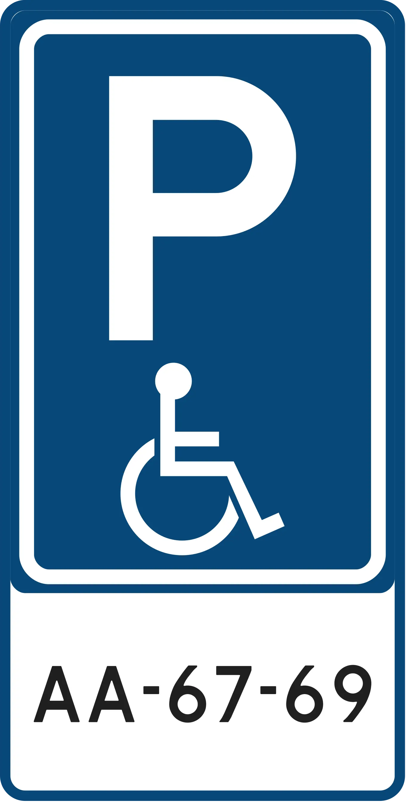
Disabled Driver Parking
Blue "P" with wheelchair symbol—reserved for vehicles with valid disabled parking permits. Only vehicles displaying the official EU disabled parking badge may use these spaces.
- Valid EU disability parking permit displayed
- Permit issued by local municipality
- Permit number: AA-XX-XX format
Fine: fines without valid permit
Time-Limited Parking & Regulations
Many Dutch parking areas have time limits displayed on blue "P" signs with supplementary hour restrictions. Overstaying these limits results in fines of fines.
Signs showing "max 2h" or similar indicate maximum parking duration during specified hours (usually business hours). After-hours parking may be unlimited or have different restrictions. Always read supplementary time signs carefully—they specify the exact hours when time limits apply.
Parking Fines & Payment in the Netherlands
Dutch parking violations are administered through a standardized fine system (parkeerboete). Fines vary by violation severity and are issued by municipal parking enforcement. Early payment offers significant discounts—typically a discount off if paid within 4-14 days.
Standard Parking Fine Structure
| Violation Type | Base Fine | Payment Deadline | Early Payment Discount |
|---|---|---|---|
| Overstaying time-limited area | fines | 30 days | a discount if paid within 14 days |
| Parking without required permit | fines | 30 days | a discount discount available |
| Parking on yellow curb | fines | 30 days | a discount discount available |
| Parking in no-parking zone (red sign) | fines | 30 days | a discount discount available |
| Blocking driveway or access | fines + towing | 30 days | a discount discount (excludes towing) |
How Fines Are Issued & Escalation
Parking violations in the Netherlands are documented with:
- Ticketing: Enforcement officers photograph violations and record location/time
- Fine Notice: You receive a formal notice within 7-14 days with parking details and violation evidence
- Payment Window: 30 days to pay at the base fine rate
- Early Payment Discount: If you pay within 4-14 days, you receive a discount discount
- Non-Payment Escalation: After 30 days, fine increases by a discount and collection agencies may be involved
Common Parking Mistakes & How to Avoid Them
Mistake 1: Confusing Black/White and Yellow Curbs
Why it happens: Drivers assume all curb colors indicate parking is prohibited. Black/white curbs actually allow brief stopping.
How to avoid it: Remember: black/white = stopping allowed, yellow = nothing allowed. If you're just dropping off a passenger, black/white curbs are fine. If you need to leave your car unattended, check for other restrictions.
Mistake 2: Parking Without a Visitor Permit in Controlled Zones
Why it happens: Visitors assume on-street parking is free in residential areas. Many Dutch neighborhoods require permits even for short-term visitors.
How to avoid it: Look for blue "P" signs with "Parkeerzone" text. If you see them, purchase a visitor permit at the nearest parking meter, online app, or municipal office.
Mistake 3: Ignoring Time-Limit Signs
Why it happens: Drivers miss supplementary time-limit signs showing "max 2h" or similar restrictions.
How to avoid it: Always read supplementary signs under the main blue "P" sign. Note the hours when the time limit applies (usually Mon-Fri 9am-6pm). After-hours and weekends may have no restrictions.
Mistake 4: Parking on Yellow Curbs for "Just a Minute"
Why it happens: Drivers think yellow curbs allow brief stopping, similar to black/white curbs. Yellow curbs absolutely prohibit stopping.
How to avoid it: Yellow curbs mean zero tolerance. Don't stop, don't drop off passengers, don't unload. The only exceptions are emergency vehicles and official vehicles on duty.
Mistake 5: Not Displaying Resident Permit Correctly
Why it happens: Permit holders forget to display their permit clearly on the dashboard, or display is partially hidden.
How to avoid it: Always place your vergunning permit visibly on your front windshield or dashboard. Enforcement officers take photos—an obscured permit looks the same as no permit.
How Curb Helps You Park with Confidence
Understanding parking rules is crucial, but applying them correctly in the moment is where drivers struggle. Dutch curb colors, prohibition signs, and permit zones can be confusing, especially for visitors unfamiliar with Dutch traffic regulations. You're standing on the street trying to decode whether a curb is black/white or yellow—and you're not sure if you need a permit or if stopping is allowed.
That's where Curb comes in.
Curb's AI-powered parking sign analysis instantly scans any parking sign and tells you exactly what the rules are:
- Whether parking is allowed right now
- If a permit is required and how to obtain it
- What time restrictions apply
- What the fine is if you violate the rule
- How long you can stay
Instead of guessing, you get a clear verdict in seconds: "Resident permit required. You cannot park here without a vergunning." Or: "Yellow curb—do not stop. Move on."
For drivers navigating Dutch cities, visiting new neighborhoods, or managing permit requirements, Curb removes the guesswork entirely.
Get Curb on the App Store
Download Curb and start scanning parking signs today.
Frequently Asked Questions
Black and white curbs mean you cannot park, but stopping (brief halting) is allowed—useful for dropping off passengers or loading goods. Yellow curbs mean no parking or stopping at any time. It's a stricter prohibition than black/white curbs. Parking on yellow curbs or stopping longer than allowed on black/white curbs will result in fines.
Look for blue "P" signs with text indicating "Parkeerzone" (parking zone) or "Vergunning-houders" (permit holders). If you see these signs, parking requires a resident permit (vergunning) or visitor permit. You cannot park without one. Visitor permits are available at parking meters (pay-and-display) or through municipal apps. Check with your local municipality for specific permit costs and application procedures.
A vergunning is a resident parking permit issued by the municipality. Residents can obtain annual vergunning passes (typically fines/year) allowing free parking in their neighborhood. Visitors can purchase temporary visitor permits at parking meters (fines/hour) or through online apps. The permit must be clearly displayed on your vehicle's dashboard.
Common fines range from fines depending on violation severity. Overstaying time-limited areas: fines. Parking without a required permit: fines. Parking on yellow curbs or no-parking zones: fines. Early payment discounts (usually a discount) are available if paid within 4-14 days of receiving the notice, significantly reducing the final amount you owe.
No, controlled parking zones (parkeerzone) require either a resident permit (vergunning) or a paid visitor permit. Non-residents parking without a permit will receive a fine of fines. Visitor permits are readily available at parking meters (pay-and-display) or through municipal parking apps for short-term stays. Always purchase a permit before parking in a controlled zone.
The Bottom Line: Know the Rules, Avoid the Fines
Parking in the Netherlands doesn't have to be stressful once you understand the basics: black/white curbs allow stopping, yellow curbs prohibit everything, and controlled parking zones require permits. Curb colors are the primary indicator of restrictions, not line markings. Most fines are avoidable with simple awareness and following posted signs.
The key is to read every sign carefully and check curb colors before you park. When in doubt, don't park. The 30 seconds you spend verifying the rules could save you fines and the hassle of dealing with a parking fine notice.
And if you want instant clarity on any parking sign or curb marking, download Curb. Whether you're in Amsterdam, Rotterdam, Utrecht, or any Dutch city, Curb's AI analysis gives you the confident answer you need—instantly.
Download Your Free Netherlands Parking Rules Cheat Sheet
Get a one-page reference guide with all Netherlands parking signs, curbs, zones, and fine amounts—perfect for printing or keeping on your phone.
Download the Free PDF